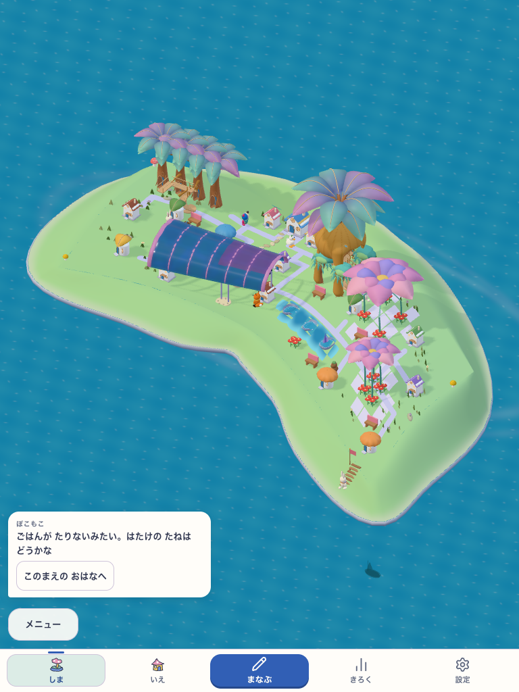
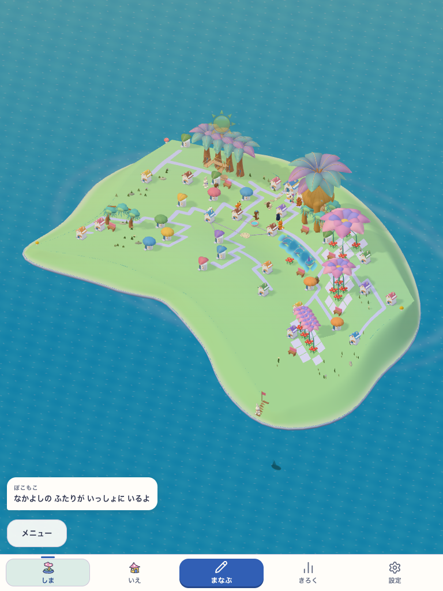
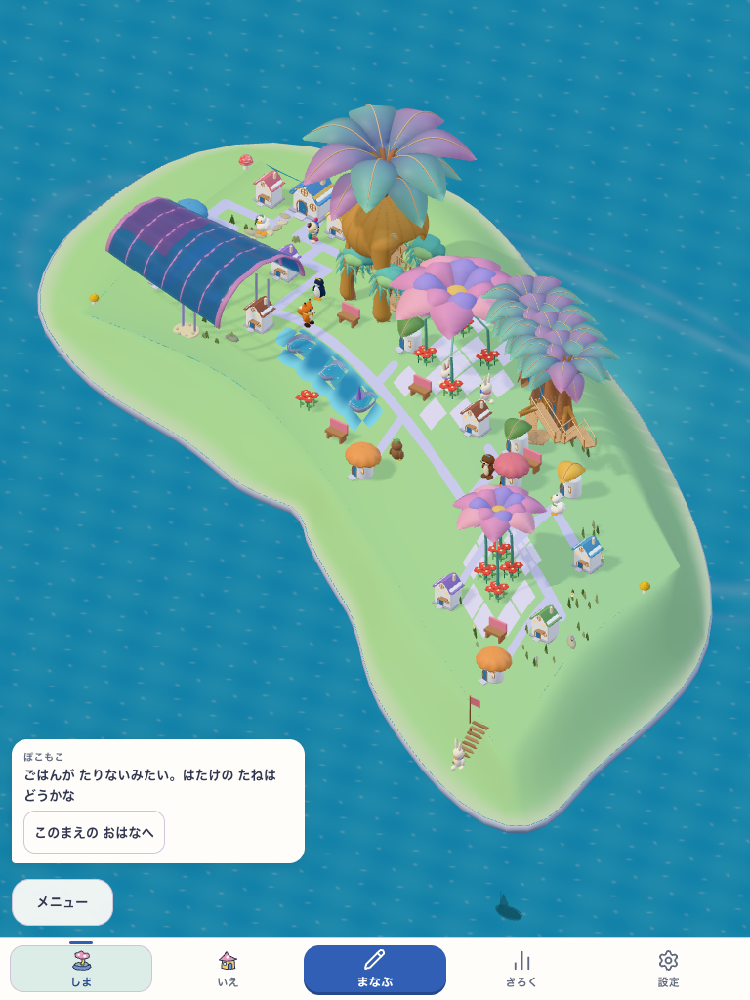
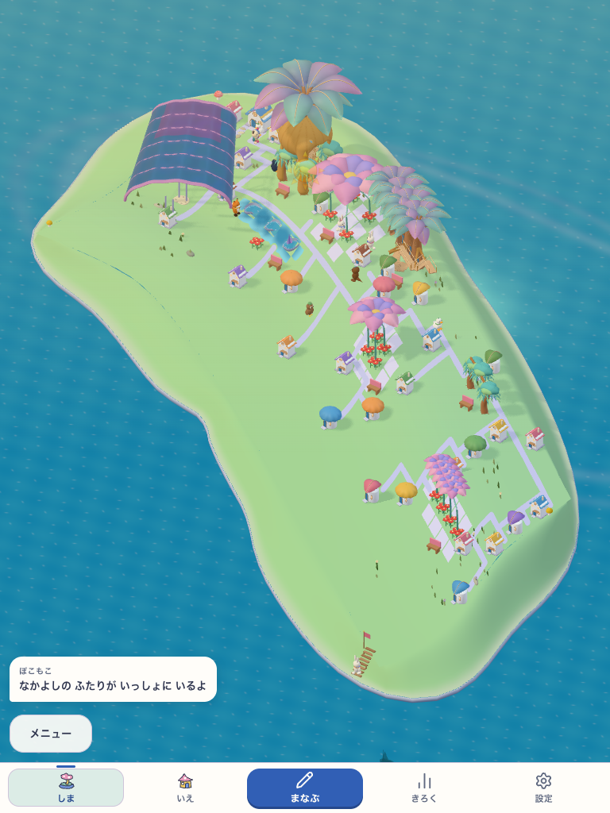
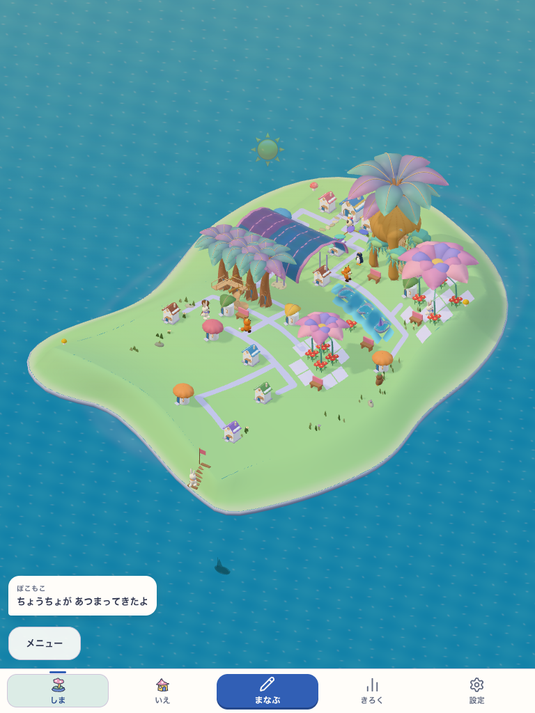
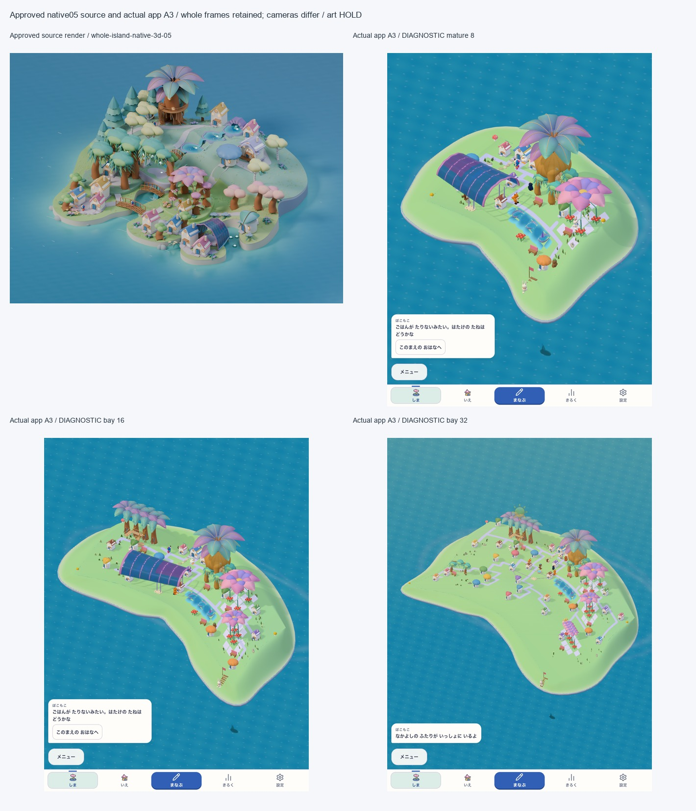
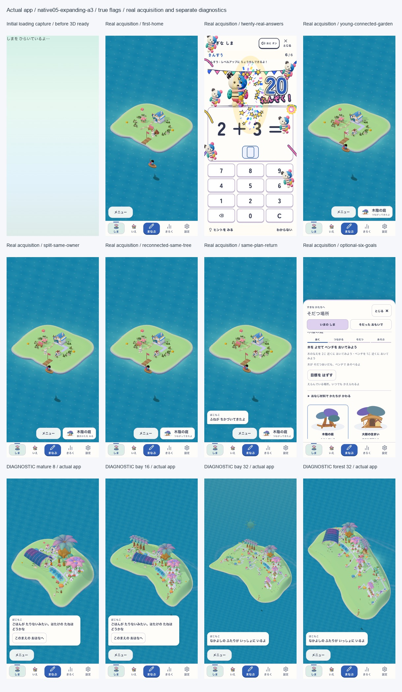

入り江を抱く島
東西へ曲がる岸。水面を挟んで二つの集落を見る。


実3D · 広がる島
元の家と庭を残しながら、入り江・森の回廊・低い丘へ広がる。
東西へ曲がる岸。水面を挟んで二つの集落を見る。


横へ続く枝と樹冠。道沿いに家と木陰の庭が続く。


南へうねる低い丘。庭のまとまりと低地の道をつなぐ。


全景を残して比較。目標の深い湾・段泉・密度は引き続き詰めます。sourceと本体のcameraは異なります。

